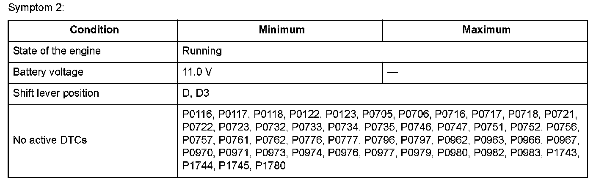

Advanced Diagnostics
DTC P0731: Problem in 1st Clutch and 1st Clutch Hydraulic Circuit (1st gear incorrect ratio)General Description
To engage 1st gear, line pressure is supplied to the 1st clutch piston, engaging the 1st clutch, and the secondary shaft and the secondary shaft 1st gear are connected and revolve together. Hydraulic pressure is supplied to the 1st clutch through the ATF strainer -> the ATF pump -> the regulator valve -> the manual valve -> the shift valves -> the feed pipe -> 1st clutch piston. (A shift valve failure in the supply route above is detected by the malfunction detection of each shift solenoid valve.) The powertrain control module (PCM) computes the ratio of the input shaft (mainshaft) speed to the output shaft (countershaft) speed. When the ratio is not the 1st gear ratio, it is detected as a malfunction of the hydraulic circuit or the 1st clutch, and a DTC is stored.
Monitor Execution, Sequence, Duration, DTC Type, OBD Status

Enable Conditions
Malfunction Threshold
Symptom 1
The actual gear ratio must match one of these conditions for at least 12 seconds with the 1st gear command:
- Actual gear ratio is greater than the 1st gear ratio by a factor of 1.2
- Actual gear ratio is less than the 1st gear ratio by a factor of 0.75
Symptom 2
The actual gear position is neutral for at least 3 seconds and then the gear up-shifted from 2nd to 3rd, even though 1st gear
shift is commanded.
Driving Pattern
Symptom 1
Start the engine, shift to D position, and drive the vehicle at a speed of 8 mph (12 km/h) or more for at least 12 seconds in 1st gear.
Symptom 2 (When the vehicle does not start at 1st gear)
1. Start the engine.
2. Shift to D position, and open the accelerator pedal about 3 % for at least 5 seconds.
3. Release the accelerator pedal until the engine speed drops 1,000 rpm or less.
4. Press the accelerator pedal again, and drive the vehicle so that the transmission shifts from 2nd to 3rd gear.
- Drive the vehicle in this manner only if the traffic regulations and ambient conditions allow.
Diagnosis Details
Conditions for illuminating the MIL
When a malfunction is detected during the first drive cycle, a Temporary DTC is stored in the PCM memory. If the malfunction recurs during the next (second) drive cycle, the DTC and the freeze frame data are stored. The MIL does not come on.
Conditions for clearing the MIL
The DTC, the Temporary DTC, and the freeze frame data can be cleared by using the scan tool Clear command or by disconnecting the battery.